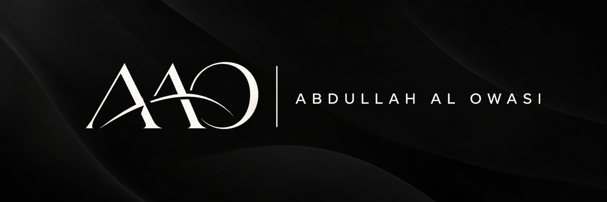

Enterprise trust
Current public claims need an accountable owner and an evidence expiry date.
Inspect domain 1 ↗
ABDULLAHCurrent public claims need an accountable owner and an evidence expiry date.
Inspect domain 1 ↗Track AI purpose, data boundaries, owners and change-triggered reviews.
Inspect domain 2 ↗Separate intake assertions, public information and verified evidence.
Inspect domain 3 ↗Connect narrowly scoped technical tests to control objectives.
Inspect domain 4 ↗Inspect modeled exposure and treatment ownership without a slide deck.
Inspect domain 5 ↗Distinguish provider duties, deployer duties and legal applicability.
Inspect domain 6 ↗Test data-egress decisions without retaining the submitted prompt.
Inspect domain 7 ↗Evidence must be current before an answer becomes a customer claim.
Inspect domain 8 ↗Treat contract assertions and signed evidence as different records.
Inspect domain 9 ↗Show unknown and stale states instead of assuming that missing evidence passes.
Inspect domain 10 ↗